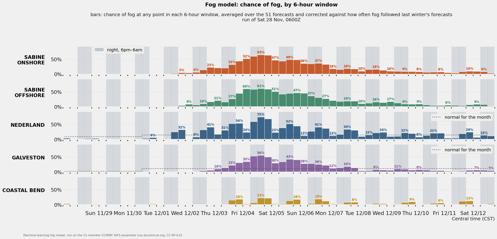
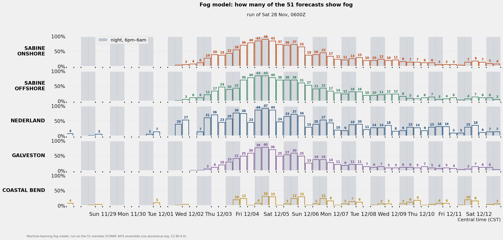
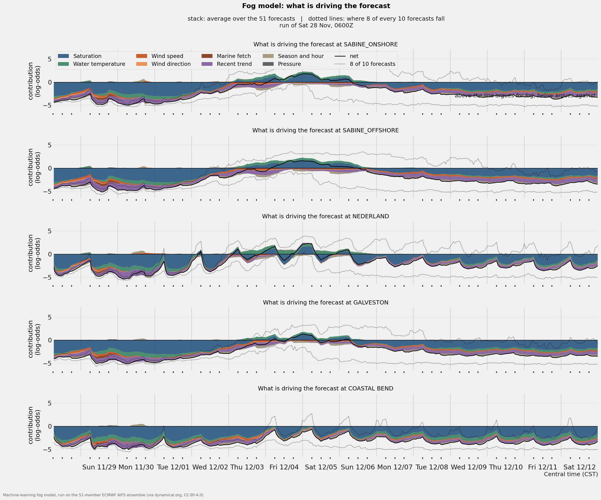

Weather Programmer / fog
Chance of fog or mist, with visibility at or below 1 mile and no heavy or convective precipitation.
Loading latest init…
Loading the chance of fog…

Loading forecast counts…


| Window (Central) |
|---|
This one is the chance. The same scores are turned into probabilities with a correction fitted on years of real observations, then averaged. A reading of 15% means that, in the past, windows the fog model scored like this one had fog about 15 times in 100. It is not “15 of the 51 forecasts said yes.” How many of the 51 forecasts show fog is in the section above. The dotted line, drawn only for Nederland and Galveston, is how often fog usually occurs there in that month.
Each of the 51 forecasts is asked a yes-or-no question: does fog show up anywhere in this six-hour window? The model is built to catch fog, not to avoid false alarms. It is set so that it finds about 9 of every 10 foggy windows, and it will flag some quiet windows along the way to do that. The bars count how many forecasts said yes. 25 of 51 means half of them expect fog. That is a head count, not the chance that fog occurs.
Each cell is the chance of fog in that six-hour window, the same number as the chart. The shaded row is the selected site's highest chance.
The colored bands are what the model is weighing. Color above the zero line is pushing toward fog. Color below it is pushing against. The black line is the balance of the two. It shows what this model used, not a list of causes.
The run time at the top is UTC. The figures, the badges, and the table are in Central time. On the chance and forecast-count charts, the vertical gray bands are night, 6pm to 6am Central. From April through September the chances are outside the months the correction was fitted on, so treat them as a rough guide.
Machine-learning fog model, run on the 51-member ECMWF AIFS ensemble (via dynamical.org, CC-BY-4.0).